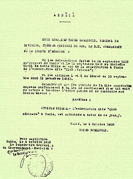
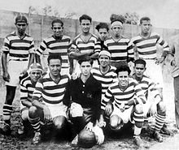
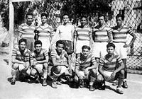
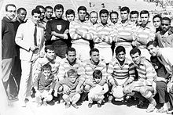
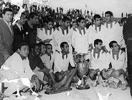
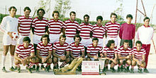
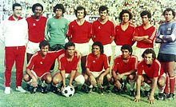
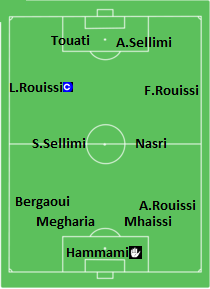
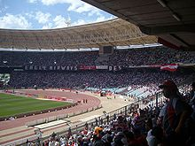

Club african
Club african
Histoire
Création
 Le Club africain était prêt à exercer ses activités dès l'année 1919 mais ce qui en retarda le début était le nom qu'il allait prendre (Club islamique africain). En effet, ce nom a été contesté par les autorités du protectorat français car, à cette époque, tout club tunisien n'avait le droit d'exister qu'avec l'autorisation des autorités. Ce n'est donc que le 4 octobre 1920 que le club est officiellement autorisé à exercer ses activités mais son itinéraire ne débute pas à cette date. Le Club africain, comme l'affirment certains de ses pères fondateurs, est le prolongement naturel du Stade africain (association fondée en 1915 et dissoute en 1918) dont il conserve les couleurs, l'esprit, une partie du nom ainsi qu'un noyau de joueurs (particulièrement Mohamed Soudani). Ce dernier est d'ailleurs le président de la réunion constitutive du club qui est tenue dans un café de Bab Jedid appartenant à une famille désormais clubiste. Il est à signaler que le premier siège social du club est le Makhzen Essouf (dépôt de laine) qui est situé dans le quartier d'El Morkadh. Dès sa présentation, la demande d'autorisation fait l'objet d'un chantage puisque l'agrément est soumis à trois conditions :
- la nomination à la tête du CA d'un président de nationalité française ;
- le changement des couleurs choisies (à savoir le rouge et le blanc) qui contraint le club à jouer sa première saison avec un maillot bleu ;
- le renoncement à l'emblème national (croissant et étoile).
Il s'agit alors de forcer les clubistes à se démarquer de toute référence au drapeau national et à s'aliéner tout son socle identitaire. Les termes de ce compromis sont catégoriquement refusés, surtout le premier point puisque son futur grand rival et voisin, l'EST fondé le 15 janvier 1919, avait un président français, Louis Montassier. Finalement, l'acharnement contraint les autorités de l'époque à céder et à accorder au Club africain une concession historique sur la nationalité tunisienne du président et l'emblème national qui désormais orne le maillot du club. Les pères fondateurs du club, beaucoup plus intransigeants, obtiennent finalement gain de cause et imposent un bureau directeur entièrement tunisien et présidé par Béchir Ben Mustapha. Le premier bureau directeur se compose comme suit :
- Président : Béchir Ben Mustapha ;
- Vice-président : Jameleddine Bousnina ;
- Secrétaire général : Chedly Alwerfeli ;
- Secrétaire général adjoint : Abdelmajid Chahed ;
- Trésorier : Hassen Nouisseri ;
- Commission sportive : Mahmoud Malouche, Ezzedine Belhadj, Fradj Abdelwahed, Ahmed Zeglaoui, Fradj Abdelwahed et Ahmed Dhahak.
La première équipe officielle en 1920 se compose comme suit :
- Gardiens : Béchir Ben Amor et Manoubi Houari
- Défenseurs : Jameldine Bousnia, Mohamed Machouch et Mahmoud Malouche (C)
- Milieux de terrain : Hassen Gaddour, Hassen Nouisseri, Ahmed Mistaoui et Mohamed Ayed
- Attaquants : Abderrahmen Kalfat, Larbi Ben Yemina, Ahmed Zeglaoui et Ahmed Dhahak
Résistance et développement (1920-1945)

Malgré une genèse difficile, le club use de l'esprit sportif pour mobiliser et encadrer la jeunesse dans une
perspective anticolonialiste. Pendant cette période, et malgré la modestie de ses moyens et les contraintes de
son environnement, il poursuit son développement, tout en contribuant à l'enracinement de la culture nationale,
à la création de La Rachidia et à la formation d'un théâtre tunisien, le club disposant de sa propre troupe
théâtrale dès les années 1930 et organisant le premier des manifestations culturelles et artistiques
. Il accorde par ailleurs la gratuité d'entrée au stade aux femmes dès les années 1930.
Le club résiste aussi à certaines velléités d'accaparement, comme la tentative avortée de Habib Bourguiba, en
1934, de le fusionner avec l'EST.
Dans le même temps, le club enregistre des acquis sportifs tels que l'accession en première division en 1937, où
il continue d'évoluer sans discontinuité.
Premiers titres (1945-1960)

Le Club africain gagne son premier titre de champion lors de la saison 1946-1947. Lors de la dernière journée de
ce championnat, le 11 mai 1947, il joue contre son rival de toujours, l'Espérance sportive de Tunis ; le match
se termine sur un score vierge, mais c'est suffisant pour que le CA remporte le titre. La saison suivante, le
club réitère cette performance en remportant son second championnat, cette fois-ci face à l'Étoile sportive du
Sahel.
Le Club africain prend également part aux éditions de la coupe ainsi que du championnat d'Afrique du Nord, mais
se trouve incapable d'en remporter une face à la concurrence imposée par les grands clubs algériens et marocains
de l'époque. En championnat avec l'émergence du Club sportif de Hammam Lif (CSHL), il se trouve incapable de
gagner des titres pendant plusieurs saisons et doit se contenter des seconds rôles.
En 1956, avec l'indépendance du pays, le club accède pour la première fois de son histoire à la finale de la
coupe de Tunisie, mais s'incline 3-1 face à un Stade tunisien (ST) en pleine ascension. Il termine troisième du
championnat à huit points du CSHL. La saison suivante, le Club africain termine quatrième, avec seulement neuf
victoires en 22 matchs, et se fait éliminer dès les premiers tours en coupe de Tunisie. La saison 1957-1958 est
encore pire vu que le CA termine sixième. Cette baisse de régime pousse ses dirigeants à recruter l'entraîneur
Fabio Roccheggiani, réputé être un grand formateur. Cette stratégie de long terme permet au CA d'améliorer peu à
peu sa situation.
Âge d'or (1960-1980)

C'est la période durant laquelle le Club africain, le vent en poupe, récolte la majorité de ses trophées sur les
plans national et régional.
Tout commence avec la conquête du championnat durant la saison 1963-1964, le premier titre remporté
après l'indépendance, gagné avec un effectif composé de jeunes joueurs comme Tahar Chaïbi, Mohamed Salah Jedidi
et Sadok Sassi. La saison suivante, le club se contente d'une seconde place en championnat avec 55 points au
compteur (treize victoires, sept nuls et deux défaites), à un point du leader, mais sauve sa saison avec la
coupe de Tunisie face à l'Avenir sportif de La Marsa (ASM), une première.
En 1966-1967, il remporte le championnat avec 58 points (quinze victoires, six nuls et une défaite),
soit huit points devant le vice-champion, l'Étoile sportive du Sahel (ESS), qu'il bat 2-0 après prolongations en
finale de la coupe, remportant ainsi pour la première fois de son histoire le doublé championnat-coupe. Cette
saison est toutefois ternie par le décès de l'entraîneur Roccheggiani peu avant la fin de la compétition. Lors
de la saison 1967-1968, le CA gagne la coupe face au Sfax railway sport mais termine second en championnat face
à ce même club. La saison suivante, il termine une nouvelle fois second — cette fois-ci à cinq points du Club
sportif sfaxien (CSS) — et gagne la coupe face à l'Espérance sportive de Tunis (EST) qu'il affronte pour la
première fois en finale de la coupe.

En 1969-1970, la coupe est à nouveau gagnée face à l'ASM, mais le championnat est perdu au détriment de
l'EST. En décembre 1970, le Club africain remporte la coupe du Maghreb des vainqueurs de coupe, devenant ainsi
le premier club tunisien à gagner un titre international en ayant tout d'abord battu l'USM Alger en demi-finale
par le score de 1-0, puis l'ASM en finale par le score de 2-0. Mais il termine deuxième du championnat malgré
une défense qui n'encaisse que huit buts ; il se fait éliminer en coupe dès le premier tour, mettant fin à une
série de quatre coupes consécutives (un record). En 1971-1972, le CA renoue avec les titres nationaux en gagnant
sa sixième coupe de Tunisie, prenant ainsi sa revanche face au ST qui l'avait battu dans la finale de 1956 ; il
termine vice-champion à trois points de l'ESS.
Avec la nomination de Jamel Eddine Bouabsa comme entraîneur, le Club africain remporte son second doublé en
1972-1973 : le sacre face au champion de la saison précédente et la coupe face à l'ASM. Toujours dans la
continuité, le CA remporte le championnat en 1973-1974, mais assez difficilement, et ce, malgré une attaque qui
marque à quarante reprises et une défense qui n'encaisse que 18 buts (meilleure défense) ; il gagne en janvier
1974, lors de cette même saison, sa première coupe du Maghreb des clubs champions. Les joueurs ont raison des
Algériens de la Jeunesse sportive de Kabylie en les battant 2-0 à Alger, en hommage à leur camarade Ezzedine
Belhassine, décédé la veille du match dans sa chambre d'hôtel.

La saison suivante, ils perdent le championnat au détriment de l'EST et la coupe au détriment de l'ESS
mais remportent une nouvelle fois la coupe du Maghreb des clubs champions en septembre 1974, à Casablanca, face
au Raja de Beni Mellal. Ils rééditent la même performance en octobre 1975, à Tunis, face à l'équipe du MC Alger
qu'ils parviennent à battre lors d'une séance de tirs au but (4-2 pour le CA), malgré la nette domination des
Algériens en cours de match.
L'équipe égale ainsi le Chabab Riadhi Belouizdad au nombre d'éditions gagnées (trois) et devient la plus
titrée à l'échelle maghrébine. Lors de la saison 1975-1976, le club termine troisième en championnat, mais
remporte sa huitième coupe aux tirs au but, face à l'EST, le portier du CA ayant réussi à arrêter trois tirs. En
1976-1977, malgré une attaque qui a marqué 41 buts et une défense qui n'en a encaissé que vingt (meilleure
défense), le CA perd le titre face à la Jeunesse sportive kairouanaise et rate la coupe en demi-finale face au
CSS. En 1977-1978, il doit une nouvelle fois se contenter d'une seconde place, à cinq points du CSS, mais voit
cinq de ses joueurs sélectionnés avec l'équipe nationale pour la coupe du monde de 1978 : Mokhtar Naili, Sadok
Sassi, Kamel Chebli, Mohamed Ali Ben Moussa et Nejib Ghommidh. Le CA gagne à nouveau le titre en 1978-1979, le
ST terminant à un point derrière. En 1979-1980, avec des joueurs comme Naili, Chebli, Néjib Abada et Moussa, et
André Nagy comme entraîneur, il gagne une nouvelle fois le championnat, cette fois-ci face à l'EST, et
n'encaisse que sept buts lors des 26 matchs du championnat (un record national). Cette moisson de titres est due
principalement à des joueurs formés au sein du club et à un grand esprit de solidarité qui unit les joueurs.
Période de sécheresse (1980-1990)

Tout commence avec la finale de la coupe de Tunisie 1979-1980 contre l'EST : le Club africain, bien que favori
après son titre de champion, s'incline 2-0 et perd l'occasion de remporter un troisième doublé. En 1980-1981,
premier jusqu'à la dernière journée, il s'incline face au CSS à Sfax, sur un score de 2-1, et se fait éliminer
rapidement en coupe. La saison suivante, il perd un autre titre, en finale de la coupe, face au Club athlétique
bizertin (CAB) et termine deuxième en championnat, avec 58 points, à six points du champion, l'EST. En
1982-1983, avec Mokhtar Tlili à la tête de l'équipe, le CA termine à un point du CSS, malgré une attaque qui
marque à 52 reprises, et se fait éliminer par l'ASM en demi-finale de la coupe sur le score de 1-0. La saison
suivante, le CA s'incline à domicile face au champion de l'année précédente, sur le score de 1-0, et termine
quatrième en championnat, à égalité de points avec l'ESS et à un point des deux leaders, le ST et le CAB.
Lors de la saison 1984-1985, avec le retour d'André Nagy comme entraîneur, l'équipe part favorite, mais
les ratages dès le début la conduisent à se contenter d'une seconde place derrière l'EST, malgré une victoire au
derby le 5 mai 1985 (5-1) qui lui permet d'espérer le titre jusqu'au bout ; elle perd la finale de la coupe aux
tirs au but, face au CSHL.
La saison suivante, le Club africain termine troisième en championnat, à un point du vice-champion, mais
à six points du champion, l'ESS, et se fait battre aux tirs au but en finale de la coupe par l'EST. En
1986-1987, le CA ne réalise qu'une performance en demi-teinte, terminant à cinq points du champion (ESS), se
faisant éliminer aux tirs au but, en quarts de finale, par le CAB. En 1987-1988, il rate le titre de champion
lors des dix dernières journées, le laissant filer entre l'EST et le Club olympique des transports, et perd une
nouvelle fois la finale de la coupe face à ce dernier aux penalties. La saison suivante, il perd d'abord la
Ligue des champions arabes (4-2) aux penalties face au Ettifaq FC et termine à treize points de l'EST en
championnat, contre qui il perd en finale de la coupe sur le score de 2-0. Il n'aura gagné aucun titre durant
cette décennie malgré un effectif comportant des joueurs comme Hédi Bayari, Lassaâd Abdelli et Kamel Chebli.
Retour au sommet et quadruplé historique (1990-1997)

Tout commence avec le championnat de la saison 1989-1990, mal entamé au début, à tel point que la différence
entre le CA et l'EST atteint treize points. La nomination de Farid Abbes à la tête du club et de Faouzi Benzarti
comme entraîneur de l'équipe première permet au CA d'enchaîner une série de victoires consécutives et de gagner
le championnat lors de la dernière journée en battant l'ASM 1-0, sur un but de Kais Yaâkoubi. Lors de la saison
suivante, le Club africain perd la finale de la coupe d'Afrique des vainqueurs de coupe contre les Nigérians du
BCC Lions Football Club et se contente d'une seconde place en championnat, loin derrière l'EST, malgré une
victoire contre ces derniers par 3-0 le 5 mai 1991. L'équipe réussit à gagner la coupe des clubs champions
africains la saison suivante, le 14 décembre 1991, devenant ainsi le premier club tunisien à remporter ce titre.
En championnat, durant l'avant-dernière journée, le Club africain reçoit le CAB, premier au classement
avec deux points d'avance sur le CA, au stade olympique d'El Menzah : Adel Sellimi marque le seul but de la
rencontre, à la 91e minute de jeu, permettant au club de remporter le dixième titre en championnat de son
histoire en terminant en tête, avec un seul point d'avance sur le CAB et 17 sur le tenant du titre, l'EST. Il
réalise le doublé en battant le ST en finale de la coupe de Tunisie, marquant une année exceptionnelle pour le
club dans la continuité de sa victoire dans la coupe des clubs champions africains et dans la coupe
afro-asiatique des clubs contre Al-Hilal Riyad.
Après une saison catastrophique en 1993-1994, Hammouda Ben Ammar prend les commandes du Club africain
pendant deux ans. Durant cette période, le club remporte en 1995 la coupe arabe des vainqueurs de coupe au stade
olympique de Sousse : l'équipe bat l'ESS en finale (1-0), après prolongation et avec un but de Nabil Maâloul sur
penalty.
Le club remporte également le championnat 1995-1996 avec des records : Boubaker Ezzitouni réussit à
garder ses cages inviolées durant 1 004 minutes, ce qui constitue alors un record national. L'équipe n'encaisse
qu'un seul but durant la phase aller du championnat et sept durant la saison, marquant 49 buts au total ; le
meilleur buteur du championnat, Sami Touati, marque 17 buts.
Années noires (1997-2007)
Alors que l'autre club de la capitale commence sa période dorée grâce au pouvoir de son
président, le club connaît une crise de dix ans, période durant laquelle le club ne gagne pas le titre de
championnat ni des titres majeurs. Il voit aussi les entraîneurs comme les présidents se succéder au parc A.
En 1996-1997, le club perd son titre de champion et termine cinquième au classement ; il sort aussi en
demi-finale de la coupe de Tunisie aux tirs au but mais sauve sa saison en remportant la Ligue des champions
arabes 1997. Le club participe aussi à la Ligue des champions de la CAF dans sa nouvelle version mais sort en
phase de groupes. Chérif Bellamine devient président du club en remplacement de Saïd Néji et recrute René
Exbrayat comme entraîneur. Lors de la saison 1997-1998, le club réalise un bon début mais termine deuxième ; il
gagne cependant la coupe de Tunisie face à l'Olympique de Béja. Durant la saison suivante, le club termine
sixième en phase de play-off du championnat et finaliste en coupe de Tunisie, conduisant au limogeage de René
Exbrayat. Au début de la saison 1999-2000, le Club africain atteint avec son nouvel entraîneur Faouzi Benzarti
la finale de la coupe d'Afrique des vainqueurs de coupe 1999 mais échoue face à l'Africa Sports. Le club entre
alors en crise et perd plusieurs matchs du championnat, terminant à la cinquième place.
La saison suivante, le club poursuit son parcours en coupe de Tunisie avec le retour d'Exbrayat et gagne
la compétition aux tirs au but face au Club sportif sfaxien le 22 octobre 2000. Durant la saison 2000-2001, le
club termine troisième du championnat et sort en quarts de finale de la coupe de Tunisie mais poursuit son
parcours africain en coupe d'Afrique des vainqueurs de coupe. Malgré sa victoire (3-1) face au tenant de titre,
le Zamalek SC, en quarts de finale, l'équipe sort en demi-finale face au Kaizer Chiefs FC. À l'occasion de la
saison 2002-2003, le club termine troisième du championnat et perd la finale de la coupe de Tunisie face au
Stade tunisien ; le club perd aussi en finale de la Ligue des champions arabes contre Al-Ahli Djeddah. Durant la
saison suivante, il poursuit son parcours africain avec la coupe de la CAF 2003 mais échoue en demi-finale
contre le Coton Sport FC de Garoua ; il termine par ailleurs la saison à la troisième place au championnat. Lors
de la saison 2004-2005, le club fait un bon début en championnat mais termine troisième, à deux points du
champion.
Kamel Idir devient alors le président du club et décide de donner les rênes de l'équipe au Français
Bertrand Marchand au milieu de la saison 2005-2006 ; la formation est finaliste de la coupe de Tunisie et
termine troisième du championnat. Durant la saison suivante, Marchand poursuit sa mission et l'équipe termine
vice-championne.
Benchikha, choix de la rigueur et passage de Pierre Lechantre (2007-2010)

Le recrutement de Youssef Mouihbi complète un secteur offensif accueillant déjà dans ses rangs Zouhaier Dhaouadi
et Moussa Pokong. Abdelhak Benchikha prône alors une tactique en 4-3-3. En définitive, les joueurs tels que
Lassaad Ouertani, Karim Aouadhi et Enam Mendamo Alexis se révèlent importants pour le club, formant un trio
complémentaire. Wissem Ben Yahia, qui confirme sa qualité de jeu au plus haut niveau, devient vite la nouvelle
idole des supporters grâce à sa polyvalence et à sa technicité en récupération des ballons.
Lors du mercato d'hiver 2008, le Club africain engage l'attaquant Aymen Rhifi de l'Avenir sportif de La
Marsa. Le 22 mai 2008, le club est sacré champion pour la douzième fois de son histoire, à la suite d'une
victoire face à l'Espérance sportive de Zarzis (2-1). À l'intersaison, on complète le secteur défensif constitué
de Mohamed Bachtobji, Mohamed Ali Gharzoul, Khaled Souissi, Hamdi Werhani, Chokri Zaalani, Helmi Hmam et Anis
Amri, sans oublier le gardien Adel Nefzi qui bat un record du championnat avec 1 269 minutes de jeu sans
encaisser le moindre but, de la 39e minute de la huitième journée à la 48e minute de la 22e
journée.
Durant la saison 2008-2009, le club remporte la coupe nord-africaine des clubs champions et termine
deuxième au championnat avec la meilleure défense, mais avec une victoire le 1er mars 2009, contre l'EST (3-0).
En 2009, Pierre Lechantre est nommé entraîneur. Le club célèbre l'année suivante son 90e
anniversaire et c'est dans le cadre de ces festivités qu'il accueille l'Olympique lyonnais pour un match de gala
le 6 janvier 2010, au stade olympique de Radès, se concluant sur un score de parité (1-1). Après la trêve
hivernale, les résultats ne sont pas au rendez-vous, tant au niveau de la deuxième phase du championnat que de
la sortie du second tour de la Ligue des champions de la CAF.
En avril 2010, le bureau directeur remplace Lechantre par Habib Mejri mais les mauvais résultats
s'accumulent avec la sortie de la coupe de Tunisie en demi-finale ; le club termine par ailleurs le championnat
à la seconde place.
Crise présidentielle (2010-2012)
Durant la préparation de la saison 2010-2011, le club vit une crise de son bureau directeur
après la sortie définitive de Kamel Idir. Si Jamel Atrous a la préférence des supporters, Belhassen Trabelsi,
frère de la première dame Leïla Ben Ali, refuse ce nom en raison d'un différend entre les familles Trabelsi et
Atrous autour de la concession Isuzu. À la suite de la désignation de Atrous, celui-ci est donc évincé avant
l'entame de la saison et remplacé par Chérif Bellamine, qui jouissait pourtant d'une paisible retraite, avec le
vice-président Mounir Balti. Deux défaites au cours des trois premiers matchs et d'autres défaites conduisent le
club à sortir de la course du championnat et de la coupe même s'il remporte la coupe nord-africaine des clubs
champions; la défaite contre l'Espérance sportive de Zarzis au stade d'El Menzah pendant la révolution et la
pression des supporters entraînent la destitution de l'entraîneur Mrad Mahjoub, son remplacement par Kais
Yaâkoubi et la démission de Balti (président du club par intérim) qui appelle à une assemblée générale durant
laquelle la situation serait éclaircie.
Après la fuite de la famille Trabelsi et du président déchu, Zine el-Abidine Ben Ali, le 14 janvier
2011, le Club africain tient une assemblée générale élective le 25 février : Jamel Atrous est élu président et
Salah Mannai vice-président. Le Club africain est la première équipe tunisienne à tenir une assemblée générale
élective après la révolution.
Après avoir été disqualifiée au troisième tour de la Ligue des champions de la CAF, Faouzi Benzarti
devient entraîneur de l'équipe ; son parcours durant les dernières journées de la saison est difficile, avec
plusieurs défaites, et l'équipe termine quatrième du championnat. Après une saison catastrophique, plusieurs
joueurs quittent le club durant le mercato d'été, comme Wissem Ben Yahia, acheté par le club turc du Mersin
İdman Yurdu pour 800 000 dinars, et Khaled Souissi, acheté par le club français de l'Athlétic Club arlésien pour
200 000 euros ; d'autres contrats de joueurs — Karim Aouadhi, Oussama Sellami et Khaled Melliti — arrivent à
échéance. Le bureau directeur décide de résilier les contrats de six joueurs et en recrute d'autres : Aymen Ben
Ayoub, Chaker Rguiî, Nafaa Jebali, Wajdi Jabbari, Amir Haj Massaoud, Vitor Sonny et Rabii Ellafi. Le Club
africain commence la saison avec la coupe de la confédération où il effectue un bon parcours et atteint la
finale : il remporte le match aller contre le Maghreb de Fès (1-0 sur un but d'Enam Mendamo Alexis à la septième
minute) mais perd le match retour (0-1) aux tirs au but. Benzarti démissionne et Patrick Liewig, directeur
technique, prend provisoirement les commandes de l'équipe. Un court passage de l'entraîneur Abdelhak Benchikha,
avec des pertes de points au classement du championnat, provoque la démission de ce dernier et le retour de
Liewig, directeur technique, qui prend provisoirement les commandes de l'équipe. Cependant, la pression du
public pousse Atrous à quitter le club avec son staff après l'assemblée générale élective.
Ère Slim Riahi (2012-2017)
À la suite de l’assemblée générale élective tenue le 16 juin 2012, Slim Riahi est élu comme
nouveau président du club et fixe des objectifs ambitieux, tout en apportant des moyens financiers considérables
: le Club africain dépense au total plus de trente millions de dinars24 pour recruter des joueurs à l'été 2012
et remporter le championnat de Tunisie. Christophe Maillol est nommé au poste de directeur sportif et Bernard
Casoni au poste d'entraîneur ; le bureau fait venir plusieurs joueurs tels que le milieu de terrain
international algérien Abdelmoumene Djabou, en provenance de l'Entente sportive sétifienne, pour trois millions
de dinars, soit le plus gros transfert de l'histoire du championnat, Hatten Baratli du Club athlétique bizertin,
Karl Max Barthélemy du Difaâ Hassani d'El Jadida ou encore Khaled Lemmouchia. Riahi évoque également une
construction à long terme, veut miser sur de jeunes joueurs comme Maher Haddad, qui signe en faveur du club pour
trois millions de dinars, soit le plus gros transfert entre deux clubs tunisiens de l'histoire du championnat.
Le Club africain cède dans le même temps Ézéchiel Ndouassel au Terek Grozny alors que d'autres joueurs quittent
le club par résiliation de contrat ou à la suite d'un prêt pour une saison. Après six matchs, l'entraîneur
Bernard Casoni se fait licencier, payant probablement la défaite au derby. Le 7 octobre 2012, pendant la trêve
avant le début de la nouvelle saison, Nabil Kouki devient le nouvel entraîneur. Malgré le mauvais début de
saison, avec trois nuls et aucun but marqué, le club réussit un bon parcours avec quatre victoires consécutives.
Quatre nouvelles recrues rejoignent le club pendant le mercato hivernal, Ammar Jemal, Zouhaier Dhaouadi, Fatah
Gharbi et Bedi Mbenza mais Gharbi est blessé et en fin de carrière et Ahmed Ben Belgacem n'est pas capable
d'arracher une seconde de jeu et finalement cédé à l'Union sportive de Ben Guerdane. Malgré son bon parcours,
Kouki est remplacé par Faouzi Benzarti après une défaite en derby, avant la dernière journée de la première
phase. Finalement, le club termine deuxième de la première phase et se qualifie pour le play-off. Mais la
fragilité psychologique, la malédiction du play-off et le manque de compétition de certains joueurs blessés
entraînent un bilan négatif : le club se classe quatrième et Benzarti est remplacé par son adjoint Fathi
Laabidi.
La saison 2013-2014 est annoncée comme celle du vrai décollage du Club africain de Riahi. Après la
réussite du Club sportif sfaxien avec l'école néerlandaise, le club recrute l'entraîneur néerlandais Adrie
Koster et une armada de joueurs étrangers dont trois espoirs ghanéens — Francis Narh, Derrik Mensah et Seidu
Salifou — et un ancien international du même pays, Prince Tagoe, de même que le Congolais Matt Moussilou et le
jeune Malien Malik Touré. Côté tunisien, on recrute Khaled Korbi, Amine Haj Saïd, un joueur ne comptant qu'une
dizaine de matchs en quatre ans, Walid Dhaouadi, jeune frère de Chamseddine Dhaouadi, avec l'espoir qu'il soit
aussi doué que son frère, et le gardien Slim Rebaï comme troisième gardien de but. L'équipe réussit un bon
départ avec trois victoires successives avant que les problèmes n'apparaissent : Narh rejoint le championnat
tchèque, Tagoe rompt son contrat, Salifou est transférable, Dhaouadi est transféré sans avoir joué une seconde
et Haj Saïd ne participe qu'à une seule rencontre en 17 matchs. Alors que Riahi décide de constituer une
commission d'enquête pour délimiter les responsabilités, Rachid Zmerli, porte-parole du club, Mehdi Gharbi, chef
de la section football, et Youssef Elmi, chef de la section seniors, se disent visés par l'enquête interne et
présentent leur démission33. Entre-temps, les changements se poursuivent : Koster est démis de ses fonctions au
profit de Landry Chauvin34 et Ézéchiel Ndouassel rappelé alors que des jeunes — Ghazi Ayedi, Seif Lahouel,
Chiheb Jebali et Malik Touré — sont progressivement lancés. Chauvin, limogé après une série de faibles
résultats, est remplacé par Mondher Kebaier. Le club termine finalement quatrième du championnat et en quarts de
finale de la coupe de Tunisie.
Durant la saison 2014-2015, le club recrute l'entraîneur français Daniel Sanchez et des joueurs
internationaux comme Yassin Mikari, Stéphane Nater, Tijani Belaïd, Saber Khalifa et les jeunes Nader Ghandri,
Chiheb Zoghlami et Ahmed Khalil ; il recrute aussi le gardien de but Farouk Ben Mustapha, Imed Meniaoui qui
s'est illustré durant la saison précédente avec l'Étoile sportive de Métlaoui et le défenseur algérien Hichem
Belkaroui35. Le club commence bien la saison, malgré des défaites en milieu de saison et des points perdus, et
reste leader de la neuvième à la dernière journée, même s'il perd l'un de ses principaux attaquants pour cause
de blessure36 : Abdelmoumene Djabou est remplacé par Meniaoui, décisif dans les dernières journées avec Saber
Khalifa, auteur de quinze buts. Le club est finalement sacré champion pour la treizième fois de son histoire et
sort en huitièmes de finale de la coupe de Tunisie et de la coupe de la confédération.
La saison 2015-2016 est affectée par les changements successifs d'entraîneur : Daniel Sanchez, Nabil
Kouki puis Ruud Krol ; le club termine à la sixième place en championnat et se voit éliminé en seizièmes de
finale de la Ligue des champions de la CAF. Kais Yaâkoubi prend alors les commendes et parvient, en fin de
saison, à qualifier son équipe en finale de la coupe de Tunisie, perdue toutefois face à l'Espérance sportive de
Tunis.
Au début de la saison 2016-2017, Yaâkoubi reste à la tête de l’équipe avant d'être remplacé en novembre
par Chiheb Ellili. Au mercato hivernal, le club vend Oussama Haddadi à Dijon et Bassem Srarfi à Nice pour la
somme de trois millions d’euros, prête Abdelkader Oueslati au club saoudien d'Al-Fateh et recrute Oussama
Darragi, Sliman Kchouk, Matthew Rusike et d'autres jeunes tels que Manoubi Haddad. Le club termine deuxième de
la première phase du championnat et se qualifie pour le play-off mais s'y classe troisième. Le club réussit
toutefois à se qualifier en phase de groupes de la coupe de la confédération et termine la saison remportant la
coupe de Tunisie. Le club poursuit l'aventure africaine avec un nouvel entraîneur, Marco Simone, mais le club ne
réussit pas à gagner le titre et sort en demi-finale contre le Supersport United FC.
Le 1er novembre 2017, Slim Riahi annonce sa démission de la présidence du club en raison de sa situation
judiciaire. Marwen Hamoudia le remplace à titre provisoire.
Phase transitoire et nouvelle ère (depuis 2017)
Après une série de mauvais résultats, le bureau provisoire décide de remplacer Marco Simone
par Bertrand Marchand. Le club réussit une série de victoires en championnat et monte dans le classement, avec
des victoires face au Club sportif sfaxien (2-1), à l'Espérance sportive de Tunis (2-1) et à l'Étoile sportive
du Sahel (1-0). Cependant, malgré son parcours en championnat et coupe de Tunisie, le club est éliminé de la
coupe de la confédération dès le premier tour, ce qui conduit au remplacement de Marchand par le directeur
sportif, Kamel Kolsi. L'équipe termine deuxième du championnat mais gagne la coupe de Tunisie le 13 mai 2018
face à l'Étoile sportive du Sahel (4-1). Le 10 juin 2018, Abdessalem Younsi est élu président pour quatre ans
après la victoire de sa liste lors de l’assemblée générale élective face à la liste du président provisoire
Marwen Hamoudia.
Après l'arrivée d'un nouveau bureau, plusieurs joueurs piliers de l'équipe se retirent — Saber Khalifa,
Nicholas Opoku, Sliman Kchouk et Seif Teka — alors que plusieurs recrutements sont effectués, comme ceux d'Aymen
Mathlouthi ou Mohamed Slim Ben Othman. Avec la venue d'un nouveau directeur sportif, Sofiene Hidoussi, et de
l'entraîneur belge José Riga, et après une phase préparatrice, le club commence le championnat avec deux
défaites en quatre matchs, ce qui provoque le limogeage de Hidoussi et de Riga, remplacé par Chiheb Ellili. Avec
le nouvel entraîneur, l'équipe enchaîne des victoires en championnat, malgré l'effectif réduit et les sanctions
de la FIFA qui interdit au club le recrutement interne et externe pour des mercatos hivernal et estival, et le
club réussit à se qualifier en phase de groupes de la Ligue des champions. L'équipe commence mal et perd
largement contre le TP Mazembe en phase de groupes, ce qui provoque le changement de l'entraîneur et l'arrivée
de Victor Zvunka. Le club ne se qualifie pas pour les quarts de finale malgré les victoires à l'extérieur en
Égypte et en Algérie, puisque l'équipe ne réussit pas à récupérer la différence des buts et termine troisième du
classement avec dix points. En championnat, l'équipe termine cinquième et perd en demi-finale de la coupe de
Tunisie contre l'Étoile sportive du Sahel à Sousse, conduisant le bureau à limoger Zvunka et à rechercher un
nouvel entraîneur pour
Acceuil